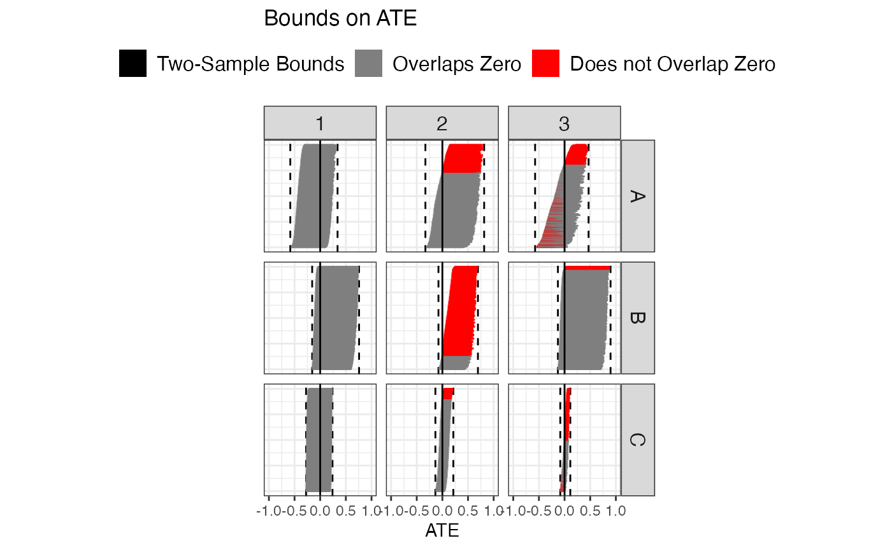

Utilize two-sample data two get potential one-sample bounds
Source:vignettes/bounds_from_trivariate.Rmd
bounds_from_trivariate.RmdBounds constructed using two-sample data generally provides much less information than bounds constructed using one-sample data. We will here see how we can squeeze a bit more information out of two-sample data by considering the potential distributions of \((X,Y)|Z\) that are in agreement with the observed \(X|Z\) and \(Y|Z\), and the model.
We will consider IVs that take three levels. To generate values of \(P(X = 1 | Z = z)\) we simply choose three values from a uniform distribution. The matrices obtained from the polymake program give us some constraints on the values of \(P(Y = 1 | Z = z)\). These are included below.
| gamma01 | gamma02 | gamma03 | gamma11 | theta11 | theta12 | theta13 |
|---|---|---|---|---|---|---|
| 1 | 0 | -1 | 1 | 0 | 0 | 0 |
| 1 | -1 | 0 | 1 | 0 | 0 | 0 |
| 1 | -1 | 0 | 0 | 1 | 1 | 0 |
| 1 | 0 | -1 | 0 | 1 | 0 | 1 |
| 3 | -1 | 0 | 2 | -1 | -1 | 0 |
| 3 | 0 | -1 | 2 | -1 | 0 | -1 |
| 1 | 0 | 0 | 1 | 0 | -1 | 0 |
| 1 | 0 | 0 | 1 | 0 | 0 | -1 |
| 2 | 1 | -1 | 2 | 0 | -1 | -1 |
| 2 | -1 | 1 | 2 | 0 | -1 | -1 |
| 1 | 1 | 0 | 2 | -1 | -1 | 0 |
| 0 | 1 | -1 | 0 | 0 | 1 | 1 |
| 0 | -1 | 1 | 0 | 0 | 1 | 1 |
| 1 | 0 | 0 | 1 | -1 | 0 | 0 |
| -1 | 0 | 1 | 0 | 1 | 0 | 1 |
| -1 | 1 | 0 | 0 | 1 | 1 | 0 |
| 1 | 0 | 1 | 2 | -1 | 0 | -1 |
The function simulate_gammas_from_thetas takes a vector of length 3 of values of \(P(X = 1 | Z = z)\), and return a vector of length 3 of values of \(P(Y = 1 | Z = z)\) such that no constraint is violated.
simulate_gammas_from_thetas <- function(thetas){ gammas <- vector(length = length(thetas)) gammas[1] <- runif(1) gammas[2] <- runif(1, min = max(0, gammas[1] - thetas[1] - thetas[2], # row 3 gammas[1] + thetas[1] + thetas[2] - 2), # row 5 max = min(1, gammas[1] - thetas[1] - thetas[2] + 2, # row 11 gammas[1] + thetas[1] + thetas[2]) # row 16 ) gammas[3] <- runif(1, min = max(0, gammas[1] - thetas[1] - thetas[3], # row 4 gammas[1] + thetas[1] + thetas[3] - 2, # row 6 gammas[2] - thetas[2] - thetas[3], # row 12 gammas[2] + thetas[2] + thetas[3] - 2), # row 9 max = min(1, gammas[2] - thetas[2] - thetas[3] + 2, # row 10 gammas[2] + thetas[2] + thetas[3], # row 13 gammas[1] - thetas[1] - thetas[3] + 2, # row 17 gammas[1] + thetas[1] + thetas[3])) # row 15 return(gammas) }
For each set of values of \(P(X = 1 | Z = z)\) and \(P(Y = 1 | Z = z)\), we first get the constraints on the values of \(\text{Cov}(X,Y | Z = z)\) that must be satisfied for the resulting distribution of \((X,Y|Z)\) to be valid. Note: the constraints used are based on the inequalities \(0 \le P(X = x, Y = y | Z = z) \le 1\), and the IV inequalities \(\max_x \sum_y \max_z P(X = x, Y = y | Z = z) \le 1\). These hold no matter the number of levels of \(Z\). However, when the number of levels of \(Z\) is greater than \(2\), these are not sufficient, only necessary, for the joint condition \((X,Y|Z)\) to be valid. Therefore, every time we sample a set of values of \(\text{Cov}(X,Y | Z = z)\), we check if the resulting joint conditional violates any of the constraints using the results from polymake. If they do violate, we reject the set of values, and sample a new set of values. We do this \(1000\) times, which results in us getting \(1000\) possible distributions of \((X,Y|Z)\) for each set of \((X|Z)\) and \((Y|Z)\). Since this takes a while to run, we save the results to a .rds file, so we can read it in for later use.
The result of this chunk is a tibble calles many_sample_joints with 5 columns:
-
jis simply for book keeping -
thetasare the values of \(P(X = 1 | Z = z)\) -
gammasare the values of \(P(Y = 1 | Z = z)\) -
pot_covscontain the constraints on \(\text{Cov}(X, Y | Z = z)\) -
samp_jointswith the sampled joint distributions, \(1000\) for each set of \(P(X = 1 | Z = z)\) and \(P(Y = 1 | Z = z)\).
The first six rows are shown below.
if(file.exists(here::here("vignettes_data/many_sample_joints.rds"))){ many_sample_joints <- read_rds(here::here("vignettes_data/many_sample_joints.rds")) } else { library(furrr) plan(multisession, workers = params$n_cores) set.seed(7226637) sim_probs <- tibble(j = 1:100) %>% mutate(thetas = map(j, ~runif(n = 3, min = 0, max = 1)), gammas = map(thetas, simulate_gammas_from_thetas), pot_covs = map2(thetas, gammas, potential_covs)) many_sample_joints <- sim_probs %>% mutate( samp_joints = future_map2(pot_covs, j, ~sample_joint_probs(.x, return_bounds = TRUE, n = 1000, max_rejections = 500, print_progress = TRUE, print_as_progress = .y), .options = furrr_options(seed = TRUE)) ) write_rds(many_sample_joints, here::here("vignettes_data/many_sample_joints.rds")) } head(many_sample_joints)
## # A tibble: 6 x 5
## j thetas gammas pot_covs samp_joints
## <int> <list> <list> <list> <list>
## 1 1 <dbl [3]> <dbl [3]> <named list [4]> <tibble [1,000 × 4]>
## 2 2 <dbl [3]> <dbl [3]> <named list [4]> <tibble [1,000 × 4]>
## 3 3 <dbl [3]> <dbl [3]> <named list [4]> <tibble [1,000 × 4]>
## 4 4 <dbl [3]> <dbl [3]> <named list [4]> <tibble [1,000 × 4]>
## 5 5 <dbl [3]> <dbl [3]> <named list [4]> <tibble [1,000 × 4]>
## 6 6 <dbl [3]> <dbl [3]> <named list [4]> <tibble [1,000 × 4]>Everything we need is included in this object. We simply need to unnest a few list columns to get the upper and lower bounds for the sampled joint distributions.
trivariate_bounds <- many_sample_joints %>% unnest(samp_joints) %>% unnest(joint) %>% unnest_wider(bounds) %>% select(j, joint, trivariate_lower = lower, trivariate_upper = upper, n_rejected) head(trivariate_bounds)
## # A tibble: 6 x 5
## j joint trivariate_lower trivariate_upper n_rejected
## <int> <list> <dbl> <dbl> <dbl>
## 1 1 <dbl[,2,3] [2 × 2 × 3]> -0.333 0.317 0
## 2 1 <dbl[,2,3] [2 × 2 × 3]> -0.372 0.259 0
## 3 1 <dbl[,2,3] [2 × 2 × 3]> -0.336 0.306 0
## 4 1 <dbl[,2,3] [2 × 2 × 3]> -0.329 0.280 0
## 5 1 <dbl[,2,3] [2 × 2 × 3]> -0.334 0.259 0
## 6 1 <dbl[,2,3] [2 × 2 × 3]> -0.336 0.282 0We then find the bounds we get if we only use the two-sample distributions.
bivariate_bounds <- many_sample_joints %>% rowwise() %>% mutate(bounds = list(get_bounds(thetas = thetas, gammas = gammas, stop = FALSE, warning = FALSE)), bivariate_constraints_violated = bounds$constraints_violated, interval = list(bounds$interval)) %>% ungroup() %>% unnest_wider(interval) %>% rename(bivariate_lower = lower, bivariate_upper = upper) %>% select(j, contains("bivariate"), thetas, gammas) head(bivariate_bounds)
## # A tibble: 6 x 6
## j bivariate_constraints_… bivariate_lower bivariate_upper thetas gammas
## <int> <lgl> <dbl> <dbl> <list> <list>
## 1 1 FALSE -0.374 0.335 <dbl [3… <dbl […
## 2 2 FALSE -0.319 0.192 <dbl [3… <dbl […
## 3 3 FALSE -0.169 0.321 <dbl [3… <dbl […
## 4 4 FALSE -0.722 0.162 <dbl [3… <dbl […
## 5 5 FALSE -0.478 0.0735 <dbl [3… <dbl […
## 6 6 FALSE -0.331 0.814 <dbl [3… <dbl […To plot it all, we combine the two sets of bounds. We order by lower limit of one-sample bounds, give id for plotting, and then create a variable contains_zero which simply tells us if the one-sample bounds contain zero (TRUE) or not (FALSE).
for_plot <- trivariate_bounds %>% left_join(bivariate_bounds %>% mutate(center = (bivariate_upper + bivariate_lower) / 2) %>% arrange(center) %>% mutate(k = row_number())) %>% arrange(j, trivariate_lower) %>% group_by(j) %>% mutate(id = row_number()) %>% ungroup() %>% mutate(contains_zero = if_else(trivariate_lower < 0 & trivariate_upper > 0, "Overlaps Zero", "Does not Overlap Zero"), facet_row = ceiling(k/10), facet_col = k - (facet_row-1)*10)
## Joining, by = "j"head(for_plot)
## # A tibble: 6 x 16
## j joint trivariate_lower trivariate_upper n_rejected bivariate_const…
## <int> <lis> <dbl> <dbl> <dbl> <lgl>
## 1 1 <dbl… -0.374 0.251 0 FALSE
## 2 1 <dbl… -0.374 0.252 0 FALSE
## 3 1 <dbl… -0.374 0.251 0 FALSE
## 4 1 <dbl… -0.373 0.255 0 FALSE
## 5 1 <dbl… -0.373 0.251 0 FALSE
## 6 1 <dbl… -0.373 0.258 0 FALSE
## # … with 10 more variables: bivariate_lower <dbl>, bivariate_upper <dbl>,
## # thetas <list>, gammas <list>, center <dbl>, k <int>, id <int>,
## # contains_zero <chr>, facet_row <dbl>, facet_col <dbl>Finally, the plot.
(plot <- for_plot %>% ggplot(aes(y = id/max(id))) + geom_vline(aes(xintercept = bivariate_lower, color = "Two-sample Bounds")) + geom_vline(aes(xintercept = bivariate_upper, color = "Two-sample Bounds")) + geom_errorbar(aes(xmin = trivariate_lower, xmax = trivariate_upper, color = contains_zero)) + geom_text(data = for_plot %>% select(j, k, contains("facet"), bivariate_upper) %>% unique(), aes(label = j, y = 0.25, x = if_else(bivariate_upper < 0.6, 0.85, -0.85))) + xlim(c(-1,1)) + facet_grid(facet_row ~ facet_col) + coord_fixed() + scale_color_manual(values = c("black", "red4", "grey50")) + labs(y = "", x = "ATE", title = "Bounds on ATE", color = "", linetype = "" ) + theme_bw() + theme(axis.ticks.y = element_blank(), axis.text.y = element_blank(), strip.background = element_blank(), strip.text = element_blank()))
Save the plot to a file for later use.
ggsave( plot, filename = here::here("figures/trivariate_bounds_plot.png"), width = 10, height = 8, dpi = 300 )
Below are 9 of the 100 runs displayed. The figures are the same as in the plot below.
chosen_ones <- c(53, 6, 66, 38, 7, 88, 73, 44, 60) for_subset_plot <- for_plot %>% filter(j %in% chosen_ones) %>% mutate(J = as.numeric(factor(j, levels = chosen_ones)), row_i = case_when(J %in% 1:3 ~ "A", J %in% 4:6 ~ "B", J %in% 7:9 ~ "C", TRUE ~ NA_character_), col_j = (J-1) %% 3 + 1) subset_plot_summaries <- for_subset_plot %>% group_by(row_i, col_j, thetas, gammas, J) %>% summarize(bivariate_lower = unique(bivariate_lower), bivariate_upper = unique(bivariate_upper), p_no_zero = mean(contains_zero == "Does not Overlap Zero")) %>% rowwise() %>% mutate(thetas = list(setNames(thetas, paste0("P(X = 1 | Z = ", 0:2, ")"))), gammas = list(setNames(gammas, paste0("P(Y = 1 | Z = ", 0:2, ")")))) %>% unnest_wider(thetas) %>% unnest_wider(gammas)
## `summarise()` regrouping output by 'row_i', 'col_j', 'thetas', 'gammas' (override with `.groups` argument)subset_plot <- ggplot(for_subset_plot, aes(y = id/max(id))) + geom_rect(data = data.frame(x_min = rep(0.2, 3), x_max = rep(0.3, 3), y_min = rep(0.1, 3), y_max = rep(0.2, 3), contains_zero = c("Two-Sample Bounds", "Overlaps Zero", "Does not Overlap Zero")), inherit.aes = FALSE, aes(xmin = x_min, xmax = x_max, ymin = y_min, ymax = y_max, fill = contains_zero), alpha = 0) + geom_vline(aes(xintercept = bivariate_lower, color = "Two-Sample Bounds"), linetype = "dashed") + geom_vline(aes(xintercept = bivariate_upper, color = "Two-Sample Bounds"), linetype = "dashed") + geom_errorbar(aes(xmin = trivariate_lower, xmax = trivariate_upper, color = contains_zero)) + geom_vline(xintercept = 0) + xlim(c(-1,1)) + facet_grid(row_i ~ col_j) + coord_fixed(ratio = 2) + scale_color_manual(values = c("black", "grey50", "red"), breaks = c("Two-Sample Bounds", "Overlaps Zero", "Does not Overlap Zero")) + scale_fill_manual(values = c("black", "grey50", "red"), breaks = c("Two-Sample Bounds", "Overlaps Zero", "Does not Overlap Zero")) + labs(x = "ATE", y = "", color = "", fill = "", linetype = "" ) + guides( color = "none", fill = guide_legend(override.aes = list(alpha = 1)) ) + theme_bw() + theme(axis.ticks.y = element_blank(), axis.text.y = element_blank(), strip.text = element_text(size = 12), legend.text = element_text(size = 12), legend.position = "top") subset_plot + labs(title = "Bounds on ATE")

This is meant to illustrate the different scenarios we can end up in:
- The first row shows us three scenarios with relatively wide two-sample bounds, more or less centered around zero. Yet we would draw three different conclusions:
- 53: even with one-sample data, we would not be able to determine direction
- 6: with one-sample data, we would not be able to determine direction if the true ACE is negative. About % of the joint probabilities would result in the one-sample data giving us the direction, and in all of these cases the direction is positive.
- 66: with one-sample data, we would be able to determine direction with about % of the possible joint distributions, but the direction could go either way.
- The second row shows scenarios where the bounds are relatively wide and centered relatively far from zero (here, it is above, but you can similarly find cases where it would be below). Again, three difference conclusions:
- 38: even with one-sample data, would would not be able to determine direction
- 7: 0% of the drawn joint distributions let us determine direction, and in all cases the direction is positive.
- 88: % of the drawn joint distributions let us determine direction, and in all cases the direction is positive.
- Notice the big difference in information in the two-sample data between 7 and 88 even though the two-sample bounds are relatively similar. One tells us that it is pretty likely that one-sample data would allow us to conclude the direction of the effect is positive, while the other one tells us it is rather unlikely we would be able to determine direction based on one-sample data.
- Finally, the third row shows us three scenarios where the two-sample bounds are relatively narrow and centered around zero. Once again, we would arrive at three different conclusions:
- 73: one-sample data would not help us determine direction
- 44: we would be able to determine direction from one-sample data in % of the drawn joints, but from the information in the two-sample data, we cannot rule out either direction. This seems rather surprising to me: even though the two-sample bounds are pretty tight around zero, bounds from one-sample data could still end up entirely on either side of zero!
- 60: in % of the drawn joints, we would be able to determine direction, and in all of these the direction is positive.
Save plot and a few summaries for later use.
write_rds(x = subset_plot_summaries, file = here::here("vignettes_data", "subset_plot_summaries.Rds")) ggsave( plot = subset_plot, filename = here::here("figures", "trivariate_bounds_subset_plot.png"), width = 8, dpi = 300, height = 8 )
Monotonicity of \(P(X = 1 | Z = z, U)\).
Below, we go through the exact same steps as above, except we now assume that \(P(X = 1 | Z = z, U)\) is monotonically increasing.
simulate_gammas_from_thetas_mono <- function(thetas){ gammas <- vector(length = length(thetas)) ## constraints: # matrices_from_polymake %>% # filter(n_z_levels == 3, x_monotone, !y_monotone, data_format == "bivariate") %>% # pull(matrix) %>% .[[1]] %>% # filter(alpha == 0) %>% # select(where(~sum(abs(.x)) > 0)) %>% # filter(rowSums(abs(.)) > 1) gammas[1] <- runif(1) gammas[2] <- runif(1, min = max(0, gammas[1] - thetas[2] + thetas[1]), # row 8 max = min(1, gammas[1] + thetas[2] - thetas[1])) # row 4 gammas[3] <- runif(1, min = max(0, gammas[2] - gammas[1], # row 5 gammas[2] + thetas[2] - thetas[3]), # row 3 max = min(1, gammas[2] + thetas[3] - thetas[2], # row 2 1 + gammas[2] - gammas[1])) # row 7 return(gammas) } if(file.exists(here::here("vignettes_data/many_sample_joints_mono.rds"))){ many_sample_joints_mono <- read_rds(here::here("vignettes_data/many_sample_joints_mono.rds")) } else { library(furrr) if(!interactive()) plan(multisession, workers = params$n_cores) set.seed(2884193) sim_probs_mono <- tibble(j = 1:100) %>% mutate(thetas = map(j, ~sort(runif(n = 3, min = 0, max = 1))), gammas = map(thetas, simulate_gammas_from_thetas_mono), pot_covs = map2(thetas, gammas, potential_covs, x_mono = TRUE)) many_sample_joints_mono <- sim_probs_mono %>% mutate( samp_joints = future_map(pot_covs, sample_joint_probs, #x, return_bounds = TRUE, n = 1000, max_rejections = 100, x_mono = TRUE, .options = furrr_options(seed = TRUE)) ) write_rds(many_sample_joints_mono, here::here("vignettes_data/many_sample_joints_mono.rds")) } trivariate_bounds_mono <- many_sample_joints_mono %>% unnest(samp_joints) %>% unnest(joint) %>% unnest_wider(bounds) %>% select(j, joint, trivariate_lower = lower, trivariate_upper = upper, n_rejected) bivariate_bounds_mono <- many_sample_joints_mono %>% rowwise() %>% mutate(bounds = list(get_bounds(thetas = thetas, gammas = gammas, x_mono = TRUE, stop = FALSE, warning = FALSE)), bivariate_constraints_violated = bounds$constraints_violated, interval = list(bounds$interval)) %>% ungroup() %>% unnest_wider(interval) %>% rename(bivariate_lower = lower, bivariate_upper = upper) %>% print() %>% select(j, contains("bivariate"))
## # A tibble: 100 x 9
## j thetas gammas pot_covs samp_joints bounds bivariate_const…
## <int> <list> <list> <list> <list> <list> <lgl>
## 1 1 <dbl … <dbl … <named … <tibble [1… <name… FALSE
## 2 2 <dbl … <dbl … <named … <tibble [1… <name… FALSE
## 3 3 <dbl … <dbl … <named … <tibble [1… <name… FALSE
## 4 4 <dbl … <dbl … <named … <tibble [1… <name… FALSE
## 5 5 <dbl … <dbl … <named … <tibble [1… <name… FALSE
## 6 6 <dbl … <dbl … <named … <tibble [1… <name… FALSE
## 7 7 <dbl … <dbl … <named … <tibble [1… <name… FALSE
## 8 8 <dbl … <dbl … <named … <tibble [1… <name… FALSE
## 9 9 <dbl … <dbl … <named … <tibble [1… <name… FALSE
## 10 10 <dbl … <dbl … <named … <tibble [1… <name… FALSE
## # … with 90 more rows, and 2 more variables: bivariate_lower <dbl>,
## # bivariate_upper <dbl>for_plot_mono <- trivariate_bounds_mono %>% left_join(bivariate_bounds_mono) %>% arrange(j, trivariate_lower) %>% group_by(j) %>% mutate(id = row_number()) %>% ungroup() %>% mutate(contains_zero = if_else(trivariate_lower < 0 & trivariate_upper > 0, "Overlaps Zero", "Does not Overalp Zero"))
## Joining, by = "j"plot_mono <- for_plot_mono %>% mutate(facet_row = ceiling(j/10), facet_col = j - (facet_row-1)*10) %>% ggplot(aes(x = id/max(id))) + geom_hline(aes(yintercept = bivariate_lower, color = "Two-Sample Bounds")) + geom_hline(aes(yintercept = bivariate_upper, color = "Two-Sample Bounds")) + geom_errorbar(aes(ymin = trivariate_lower, ymax = trivariate_upper, color = contains_zero)) + ylim(c(-1,1)) + facet_grid(facet_row ~ facet_col) + coord_fixed() + scale_color_manual(values = c("black", "grey50", "red4")) + labs(x = "", y = "ACE", title = "Bounds on ACE", caption = "Assuming P(X = 1 | Z = z, U) is monotonically increasing.", color = "", linetype = "" ) + theme_bw() + theme(axis.ticks.x = element_blank(), axis.text.x = element_blank()) plot_mono

ggsave(plot_mono, filename = here::here("figures/trivariate_bounds_mono_plot.png"), width = 10, height = 10, dpi = 300)